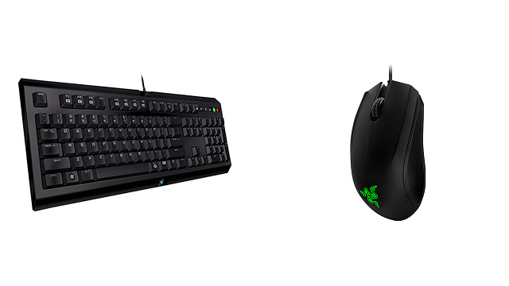
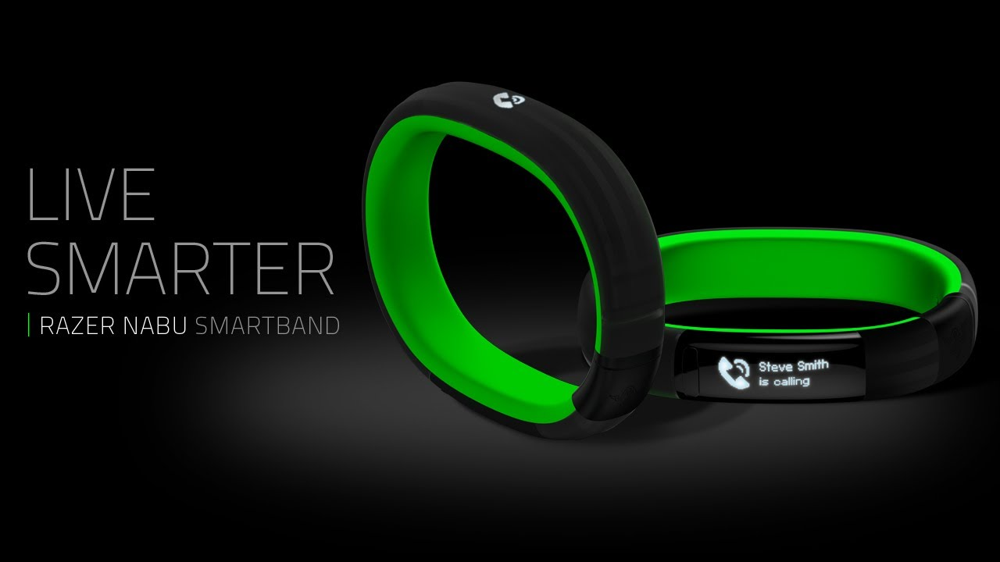
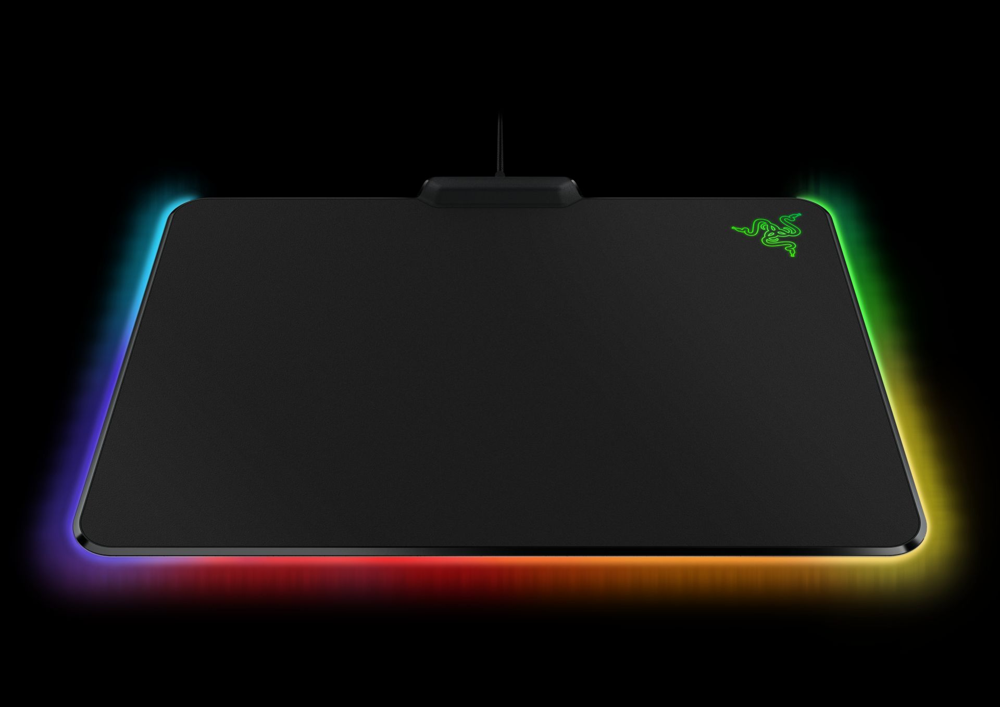
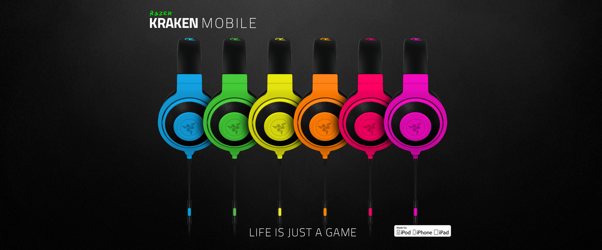

Na BGS deste ano, a Razer expôs alguns dos produtos que vão trazer para o nosso mercado. Alguns deles são: o Cyclosa, o Nabu,o Firefly e o Kraken mobile. Nesse post eu irei falar um pouco mais sobre eles e como a Razer trará estes gadgets para o Brasil.
Vamos aos Gadgets?
O Cyclosa é um novo combo que a Razer fez para países emergentes trazendo o teclado Cyclosa mais barato em conjunto de um mouse Razer Abyssus por um preço acessível. Ele tem quatro opções de cores e todas estão disponíveis para escolha via Razer Synapse(software da Razer para configuração dos Gadgets), foram tiradas as macro keys e seus botões não são mecânicos. O Cyclosa terá um preço acessível para todos os gamers que querem um equipamento de qualidade e com um preço acessível.
O Nabu é a novidade mais quente da Razer até agora, ele é uma smartband. Porém, esse equipamento que aparenta ser pequeno relógio, tem muitas ferramentas legais a oferecer, como a opção de marcar a quilometragem da sua corrida, quantas calorias foram gastas e sua velocidade, entre outras funções fitness.
Além disso, o Nabu tem uma facilidade extrema de compartilhar informações com seus amigos. Por exemplo, se duas pessoas apertam suas mãos usando o “relógio”, seus perfis no Facebook virarão amigos, ou se essas pessoas estiverem correndo e uma passa perto da outra os dados das corridas serão trocados, permitindo uma maior integração entre as pessoas que usam o equipamento.
Como o Nabu é opensource(código aberto), outras pessoas poderão desenvolver ferramentas para o relógio, porém a Razer também irá continuar desenvolvendo ferramentes, o dispositivo já conta, inclusive, com uma ferramenta para você cadastrar o cartão de crédito e pagar por NFC.
O Firefly é o novo mousepad que a Razer está lançando para os amantes de cores. Ele tem luzes LED que podem brilhar em uma cor ou também na função Chroma(cores alternantes), o que faz o mousepad brilhar em todas as cores disponíveis. O equipamento usa um tecido muito bom e suave para um melhor movimento do seu mouse e seu tamanho oferece bastante espaço para movimentação.
O Kraken Mobile é uma versão para celulares e tablets do fone Kraken já disponível para PCs e Macs. Essa versão diferente do fone nos presenteia com um controle de volume, botões para controlar suas músicas e um microfone embutido dentro do controle, para que você possa atender a uma ligação sem precisar desconectar o dispositivo.
